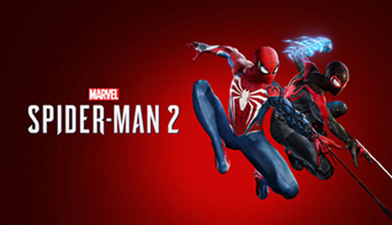

Videojuegos del Hombre Araña
Videojuegos
Spider-Man es una saga de videojuegos de aventura de acción cuyo propietario actual es Sony y que actualmente cuenta con un total de 25 juegos
para PS5, Android, Xbox One, PS4, PSVITA, Wii U, Nintendo 3DS, iPhone, Xbox 360, PS3, Wii, PSP, NDS, Game Boy Advance, N-Gage, Xbox, GameCube, PS2,
PC, Dreamcast, Nintendo 64 y PS One.
- Spider-man: Spider-Man para la PlayStation (PSX) es un videojuego de acción y aventura lanzado en 2000, que captura la esencia del icónico
superhéroe de Marvel con una mezcla vibrante de exploración, combate y narrativa. En este título, los jugadores se ponen en la piel de Spider-Man,
balanceándose por los rascacielos de Nueva York, enfrentándose a una variedad de villanos clásicos y resolviendo puzzles que requieren tanto músculo
como ingenio.
- Spider-Man (2000):Spider-Man es un videojuego de acción y aventura desarrollado por Neversoft y publicado por Activision en el
año 2000. Basado en el popular personaje de Marvel Comics, el juego fue inicialmente lanzado para la consola PlayStation y posteriormente adaptado a
otras plataformas, incluyendo Game Boy Color, Nintendo 64, Dreamcast, Microsoft Windows y Mac OS.
- Spider-Man (2001):Spider-Man es un juego de acción y aventuras lanzado en el año 2000 para varias plataformas, incluyendo
PlayStation, Nintendo 64 y PC. Desarrollado por Neversoft y publicado por Activision
- Spider-Man:Mysterio´s Menace: Es un videojuego de acción y plataformas desarrollado por Vicarious Visions y publicado por Activision
para la consola Game Boy Advance. Lanzado en 2001, este título permite a los jugadores controlar a Spider-Man en una serie de misiones para detener al
villano Mysterio y sus secuaces.
- Spider-Man: The Movie:Es un videojuego de acción y aventura basado en la película de Spider-Man de 2002, dirigida por Sam Raimi.
Desarrollado por Treyarch y publicado por Activision, el juego fue lanzado para varias plataformas, incluyendo PlayStation 2, Xbox, GameCube y PC.
- Spider-Man 2: Spider-Man 2, desarrollado por Treyarch y publicado por Activision en 2004, es un videojuego de acción y aventura
basado en la película homónima de Spider-Man dirigida por Sam Raimi. Lanzado para múltiples plataformas, incluidas PlayStation 2, Xbox, GameCube y PC,
el juego permite a los jugadores asumir el papel de Spider-Man en una recreación de mundo abierto de la ciudad de Nueva York. Spider-Man 2 es
ampliamente reconocido por su innovador sistema de balanceo con telarañas, que ofreció una libertad de movimiento sin precedentes y sentó las bases
para futuros juegos de superhéroes.
- Ultimate Spider-Man:Ultimate Spider-Man es un videojuego de acción y aventura desarrollado por Treyarch y publicado
por Activision en 2005. Basado en la serie de cómics Ultimate Spider-Man de Marvel, el juego fue lanzado para múltiples plataformas, incluyendo
PlayStation 2, Xbox, GameCube, PC, y más tarde para Game Boy Advance y Nintendo DS.
- Spider-Man: Battle for New York:Es un videojuego de acción y aventura desarrollado por Vicarious Visions y publicado por
Activision. Fue lanzado en 2006 y está disponible para las plataformas Game Boy Advance y Nintendo DS.
- Spider-Man 3:Spider-Man 3 es un videojuego de acción y aventura desarrollado por Treyarch y publicado por Activision.
Lanzado en 2007, este título está disponible para múltiples plataformas, incluyendo PlayStation 2, PlayStation 3, Xbox 360, Wii, Nintendo DS, y PSP.
El juego es una adaptación de la película de 2007 del mismo nombre, permitiendo a los jugadores explorar y proteger una vasta recreación en 3D de la
ciudad de Nueva York como el icónico superhéroe Spider-Man.
- Spider-Man: Friend or Foe:Spider-Man: Friend or Foe es un videojuego de acción y aventura inspirado en la franquicia de
Spider-Man de Marvel Comics, aunque no está directamente basado en ninguna película específica o serie de cómics. Fue desarrollado por Next Level
Games y publicado por Activision. El juego fue lanzado en 2007 para múltiples plataformas incluyendo Xbox 360, PlayStation 2, Nintendo DS, Wii, y PSP.
se destaca por su enfoque en la cooperación y la jugabilidad multijugador, permitiendo a los jugadores unirse y combinar habilidades en el combate
contra varios villanos del universo de Spider-Man.
- Spider-Man: Web of Shadows: es una aventura de acción desarrollada por Treyarch y Shaba Games y publicada por Activision
para PlayStation 3, PlayStation 2, PSP, Xbox 360, Nintendo Wii, Nintendo DS y PC. Un juego protagonizado por el popular superhéroe de Marvel en el
que tenemos que hacer frente a una invasión de simbiontes en las calles de Nueva York, pudiendo utilizar diferentes trajes y contando con la ayuda de
personajes como Wolverine, Luke Cage o Moon Knight.
- Spider-Man: Shattered Dimensions:es una aventura de acción desarrollada por Beenox y publicada por Activision para
PlayStation 3, PSP, Xbox 360, Nintendo Wii, Nintendo DS y PC. El Hombre Araña en uno de sus juegos más originales, en el que controlamos a varias
versiones del superhéroe de Marvel, como Spider-Man Noir, Spider-Man 2099 o Ultimate Spider-Man, cada una con un estilo visual y de juego diferente,
aprovechando el Multiverso por primera vez en los videojuegos, muchos años antes de que se popularizada gracias a las películas del MCU.
- Spider-Man: Total Mayhem:Spider-Man: Total Mayhem es un videojuego de acción desarrollado y publicado por Gameloft en 2010
para dispositivos iOS y Android. Ambientado en el universo Ultimate de Marvel, el juego permite a los jugadores controlar a Spider-Man mientras
combate a diversos villanos para salvar la ciudad de Nueva York. Aunque fue bien recibido por su jugabilidad y gráficos, actualmente
no está disponible en las tiendas oficiales de aplicaciones.
- Spider-Man: Edge of Time: Es un videojuego de acción-aventura, desarrollado por Beenox y publicado por Activision. Fue lanzado
en octubre de 2011 para varias plataformas incluyendo PlayStation 3, Xbox 360, Wii, y Nintendo 3DS. Este título se distingue por presentar a dos
versiones diferentes del icónico superhéroe, Spider-Man: Peter Parker y Miguel O'Hara, también conocido como Spider-Man 2099.
- The Amazing Spider-Man: es una aventura de acción desarrollada por Beenox y publicada por Activision para PlayStation 3,
PS Vita, Xbox 360, Nintendo DS, Nintendo 3DS, Nintendo Wii, Nintendo Wii U y PC. El juego oficial de la película del mismo nombre protagonizada por
Andrew Garfield y Emma Stone, una aventura en mundo abierto que continúa la historia justo donde lo dejó el film, explorando con libertad
las calles de Manhattan con un satisfactorio sistema de desplazamiento y espectaculares combates cuerpo a cuerpo.
- The Amazing Spider-Man: Ultimate Edition:Es un juego de acción y aventura desarrollado por Beenox y publicado por Activision.
Lanzado en 2013 para la Wii U, esta edición es una versión mejorada del juego original The Amazing Spider-Man lanzado en 2012. El juego se basa en
la película homónima y presenta una narrativa original que continúa los eventos del film.
- The Amazing Spider-Man 2:Es una aventura de acción desarrollada por Beenox y publicada por Activision para PlayStation 3, PlayStation 4,
Xbox 360, Xbox One, Nintendo Wii U, Nintendo 3DS, PC y dispositivos móviles iOS y Android. El videojuego oficial
de la película The Amazing Spider-Man 2: El poder de Electro (2014), una aventura de acción en mundo abierto en la que controlando al Hombre araña
tenemos que enfrentarnos a villanos como Kingpin, Kraven o Electro, incluyendo el original sistema "héroe o amenaza", con el que la ciudad reacciona
de manera diferente dependiendo de nuestras acciones
- Spider-Man Unlimited:Es un videojuego de tipo "runner" desarrollado por Gameloft y lanzado en 2014. El juego fue disponible
para plataformas móviles como iOS, Android y Windows Phone.
- Spider-Man: Homecoming - The Virtual Reality Experience:Es un videojuego de realidad virtual desarrollado por CreateVR, basado
en la popular película de Marvel "Spider-Man: Homecoming". Lanzado en 2017 para PlayStation VR, Oculus Rift, y HTC Vive, este juego ofrece a los
jugadores la oportunidad de experimentar el mundo de Spider-Man a través de los ojos del superhéroe. Esta experiencia VR es un corto pero emocionante
simulador que permite a los usuarios balancearse entre los rascacielos de Nueva York, enfrentarse a desafíos y interactuar con el entorno de una
manera única.
- Spider-Man:Spider-Man para PS4 es un videojuego de acción y aventuras con un estilo jugable de mundo abierto, que permite al jugador
desplazarse de un lugar a otro con total libertad de movimientos y que tiene por escenario donde de desarrolla la historia, la ciudad de Nueva York. El
juego está desarrollado por Imsomniac Games, creadores de juegos como Spyro, Ratchet & Clank o Sunset Overdrive, entre otros y además
está producido por Sony como videojuego exclusivo de PlayStation 4.
- Spider-Man: Far From Home Virtual Reality:Es una experiencia inmersiva en realidad virtual desarrollada para coincidir con
el lanzamiento de la película "Spider-Man: Far From Home". Esta experiencia VR, disponible en plataformas como PlayStation VR, Oculus Rift y HTC Vive,
permite a los jugadores asumir el papel de Spider-Man y explorar libremente Nueva York, enfrentándose a desafíos y enemigos icónicos.
- Spider-Man: Miles Morales:Es el nuevo juego de acción y aventura en mundo abierto de Insomniac Games para PlayStation 5,
que cuenta como título independiente de Marvel’s Spider-Man para PlayStation 4 aunque ofrece su misma fórmula jugable. De esta forma, encarnando
a Morales y no a Peter Parker, viajaremos por una ciudad de Nueva York mejor recreada y detallada, combatiendo el crimen y luchando contra los
habituales villanos de los cómics de Marvel.
- Spider-Man: Remastered:Es un videojuego de acción y aventuras con un estilo jugable de mundo abierto, que permite al
jugador desplazarse de un lugar a otro con total libertad de movimientos y que tiene por escenario donde de desarrolla la historia, la ciudad de
Nueva York. El juego está desarrollado por Imsomniac Games, creadores de juegos como Spyro, Ratchet & Clank o Sunset Overdrive, entre otros y además
está producido por Sony como videojuego exclusivo de PlayStation 4.
- Marvel's Spider-Man 2: Es una aventura de acción desarrollada por Insomniac Games y publicada por
Sony Interactive Entertainment para PlayStation 5. La continuación del exitoso Marvel's Spider-Man (2018), protagonizada por Peter Parker y
Miles Morales, los trepamuros que defienden Nueva York y a los que podemos controlar en cualquier momento, teniendo que luchar contra los peligrosos
Venom y Kraven el Cazador, en un mundo abierto más grande y detallado.


Fuente:
Vandal
Contacto:
Muruaga
Otras Páginas de Spider-Man: